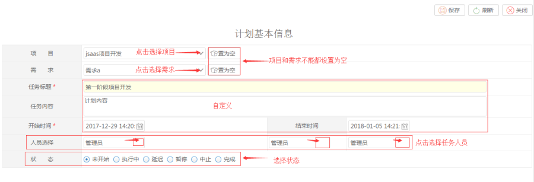
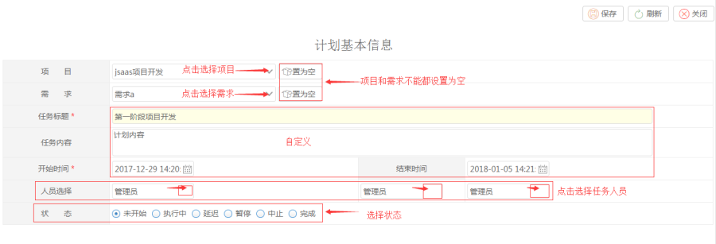

新增计划任务
功能描述：可新增计划任务，新增的计划任务在计划任务所属人的【我的计划任务】中显示。
操作：选择项目、需求，编写任务标题，任务内容，设置计划开始时间结束时间、任务人员，选择状态，点击保存。

（注：执行中和完成状态将会对实际开始时间和实际结束时间进行操作）
功能描述：可新增计划任务，新增的计划任务在计划任务所属人的【我的计划任务】中显示。
操作：选择项目、需求，编写任务标题，任务内容，设置计划开始时间结束时间、任务人员，选择状态，点击保存。

（注：执行中和完成状态将会对实际开始时间和实际结束时间进行操作）